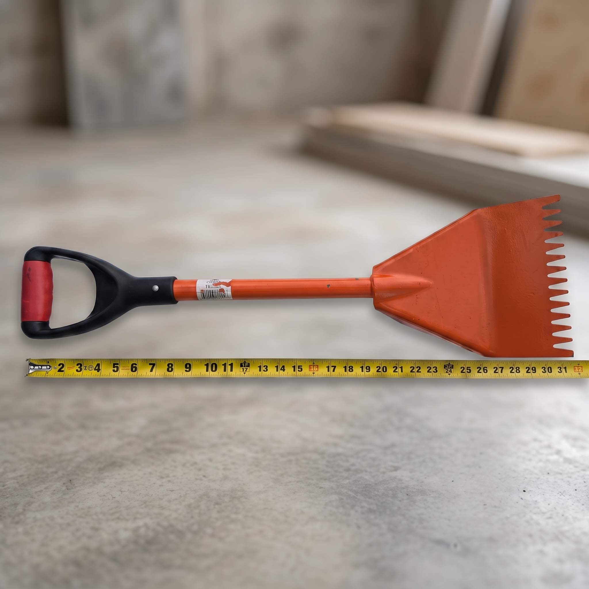
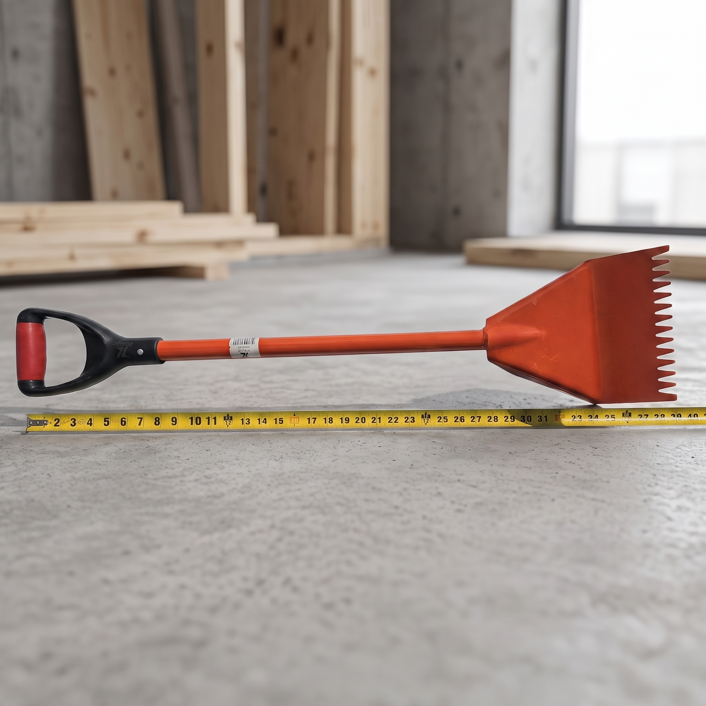
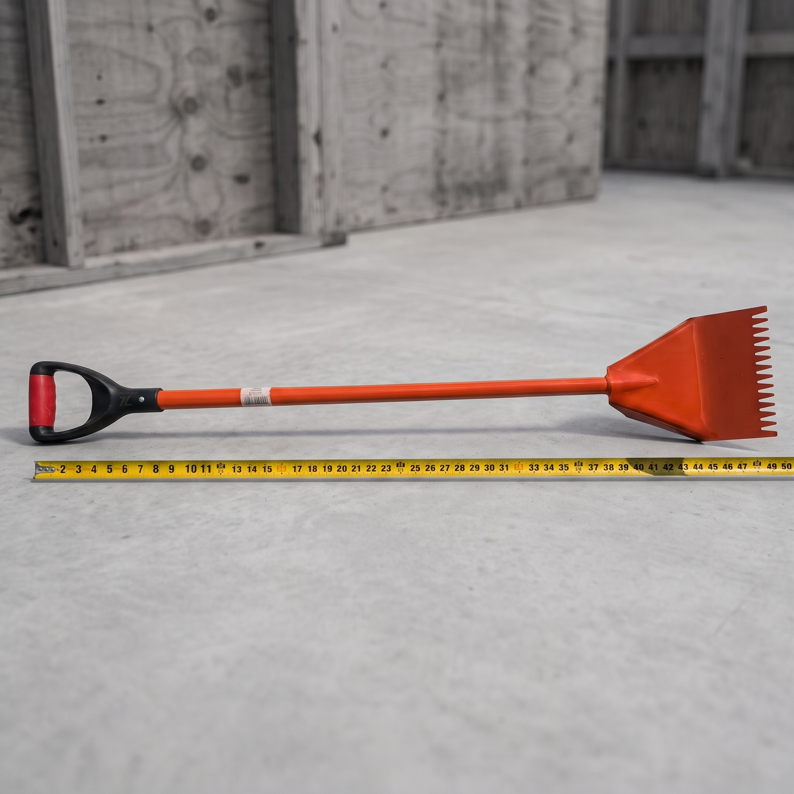

Pala quita tejas dentada con mango tipo D
$65.00 USD
🏠 Pala quita tejas dentada — levanta teja y clavo de un solo tirón
Cabeza de acero con dientes que atrapan la cabeza del clavo y punto de apoyo reforzado que hace palanca por ti. Mango con agarradera tipo D para jalar con las dos manos sin que se te resbale.
✅ Cabeza de acero dentada
✅ Punto de apoyo reforzado
✅ Agarradera tipo D
✅ Saca teja y clavos juntos
✅ Acabado naranja de alta visibilidad
La herramienta que hace rápido un retecho. 💪
Pedir por WhatsApp